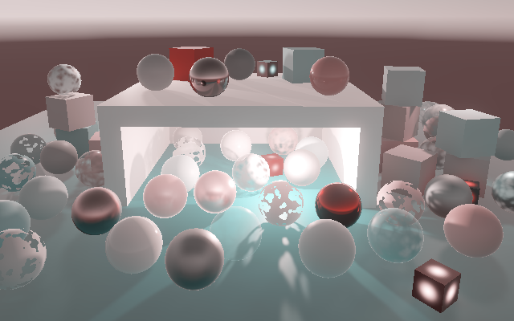

Color Grading
Playing with Colors
- Perform color grading.
- Duplicate multiple URP/HDRP color grading tools.
- Use a color LUT.
This is the 13th part of a tutorial series about creating a custom scriptable render pipeline. This time we'll add various tools for color grading.
This tutorial is made with Unity 2019.4.10f1.

Color Adjustments
Currently we only apply tone mapping to the final image, to bring HDR colors in visible LDR range. But this is not the only reason to adjust the colors of an image. There are roughly three steps of color adjustments for video, photos, and digital images. First comes color correction, which aims to make the image match what we would see if we observed the scene, compensating for the limitations of the medium. Second comes color grading, which is about achieving a desired look or feel that doesn't match the original scene and needn't be realistic. These two steps are often merged into one color grading step. After that comes tone mapping, to map HDR colors to the display range.
With only tone mapping applied the image tends to become less colorful except when it's very bright. ACES increases the contrast of dark colors a bit, but it's no substitute for color grading. This tutorial uses neutral tone mapping as a basis.
Color Grading Before Tone Mapping
Color grading happens before tone mapping. Add a function for it to PostFXStackPasses, before the tone mapping passes. Initially only have it limit the color components to 60.
float3 ColorGrade (float3 color) {
color = min(color, 60.0);
return color;
}
Invoke this function in the tone mapping passes instead of limiting the color there. Also add a new pass for no tone mapping, but with color grading.
float4 ToneMappingNonePassFragment (Varyings input) : SV_TARGET {
float4 color = GetSource(input.screenUV);
color.rgb = ColorGrade(color.rgb);
return color;
}
float4 ToneMappingACESPassFragment (Varyings input) : SV_TARGET {
float4 color = GetSource(input.screenUV);
color.rgb = ColorGrade(color.rgb);
color.rgb = AcesTonemap(unity_to_ACES(color.rgb));
return color;
}
float4 ToneMappingNeutralPassFragment (Varyings input) : SV_TARGET {
float4 color = GetSource(input.screenUV);
color.rgb = ColorGrade(color.rgb);
color.rgb = NeutralTonemap(color.rgb);
return color;
}
float4 ToneMappingReinhardPassFragment (Varyings input) : SV_TARGET {
float4 color = GetSource(input.screenUV);
color.rgb = ColorGrade(color.rgb);
color.rgb /= color.rgb + 1.0;
return color;
}
Add the same pass to the shader and the PostFXStack.Pass enum, before the other tone mapping passes. Then adjust PostFXStack.DoToneMapping so the None mode uses its own pass instead of Copy.
void DoToneMapping(int sourceId) {
PostFXSettings.ToneMappingSettings.Mode mode = settings.ToneMapping.mode;
Pass pass = Pass.ToneMappingNone + (int)mode;
Draw(sourceId, BuiltinRenderTextureType.CameraTarget, pass);
}
The ToneMappingSettings.Mode enum must now start at zero.
public struct ToneMappingSettings {
public enum Mode { None, ACES, Neutral, Reinhard }
public Mode mode;
}
Settings
We're going to copy the functionality of the Color Adjustments post-processing tool of URP and HDRP. The first step is to add a configuration struct for it to PostFXSettings. I added using System because we'll need to add the Serializable attribute a bunch more times.
using System;
using UnityEngine;
[CreateAssetMenu(menuName = "Rendering/Custom Post FX Settings")]
public class PostFXSettings : ScriptableObject {
…
[Serializable]
public struct ColorAdjustmentsSettings {}
[SerializeField]
ColorAdjustmentsSettings colorAdjustments = default;
public ColorAdjustmentsSettings ColorAdjustments => colorAdjustments;
…
}
The color grading functionality of URP and HDRP is identical. We'll add the same configuration options for color grading, in the same order. First is Post Exposure, an unconstrained float. After that comes Contrast, a slider going from −100 to 100. The next option is Color Filter, which is an HDR color without alpha. Next up is Hue Shift, another slider but going from −180° to +180°. The last option is Saturation, again a slider from −100 to 100.
public struct ColorAdjustmentsSettings {
public float postExposure;
[Range(-100f, 100f)]
public float contrast;
[ColorUsage(false, true)]
public Color colorFilter;
[Range(-180f, 180f)]
public float hueShift;
[Range(-100f, 100f)]
public float saturation;
}
The default values are all zero, except the color filter should be white. These settings won't change the image.
ColorAdjustmentsSettings colorAdjustments = new ColorAdjustmentsSettings {
colorFilter = Color.white
};
We're doing color grading and tone mapping at the same time, so refactor rename PostFXStack.DoToneMapping to DoColorGradingAndToneMapping. We'll also be accessing the inner types of PostFXSettings a lot here, so let's add using static PostFXSettings to keep the code shorter. Then add a ConfigureColorAdjustments method in which we grab the color adjustment settings and invoke it at the start of DoColorGradingAndToneMapping.
using UnityEngine;
using UnityEngine.Rendering;
using static PostFXSettings;
public partial class PostFXStack {
…
void ConfigureColorAdjustments () {
ColorAdjustmentsSettings colorAdjustments = settings.ColorAdjustments;
}
void DoColorGradingAndToneMapping (int sourceId) {
ConfigureColorAdjustments();
ToneMappingSettings.Mode mode = settings.ToneMapping.mode;
Pass pass = Pass.ToneMappingNone + (int)mode;
Draw(sourceId, BuiltinRenderTextureType.CameraTarget, pass);
}
…
}
We can suffice with setting a shader vector and color for the color adjustments. The color adjustments vector components are the exposure, contrast, hue shift, and saturation. Exposure is measured in stops, which means that we have to raise 2 to the power of the configured exposure value. Also convert contrast and saturation to the 0–2 range and hue shift to −1–1. The filter must be in linear linear color space.
I won't show the addition of the accompanying shader property identifiers.
ColorAdjustmentsSettings colorAdjustments = settings.ColorAdjustments; buffer.SetGlobalVector(colorAdjustmentsId, new Vector4( Mathf.Pow(2f, colorAdjustments.postExposure), colorAdjustments.contrast * 0.01f + 1f, colorAdjustments.hueShift * (1f / 360f), colorAdjustments.saturation * 0.01f + 1f )); buffer.SetGlobalColor(colorFilterId, colorAdjustments.colorFilter.linear);
Post Exposure
On the shader side, add the vector and color. We'll put every adjustment in its own function and start with the post exposure. Create a ColorGradePostExposure function that multiplies the color with the exposure value. Then apply exposure in ColorGrade after limiting the color.
float4 _ColorAdjustments;
float4 _ColorFilter;
float3 ColorGradePostExposure (float3 color) {
return color * _ColorAdjustments.x;
}
float3 ColorGrade (float3 color) {
color = min(color, 60.0);
color = ColorGradePostExposure(color);
return color;
}
The idea of post-exposure is that it mimics a camera's exposure, but is applied after all other post-effects, immediately before all other color grading. It is a nonrealistic artistic tool that can be used to tweak exposure without influencing other effects, like bloom.
Contrast
The second adjustment is contrast. We apply it by subtracting uniform mid gray from the color, then scaling by the contrast, and adding mid gray to that. Use ACEScc_MIDGRAY for the gray color.
float3 ColorGradingContrast (float3 color) {
return (color - ACEScc_MIDGRAY) * _ColorAdjustments.y + ACEScc_MIDGRAY;
}
float3 ColorGrade (float3 color) {
color = min(color, 60.0);
color = ColorGradePostExposure(color);
color = ColorGradingContrast(color);
return color;
}
For best results this coversion is done in Log C instead of linear color space. We can convert from linear to Log C with the LinearToLogC function from the Color Core Library file and back with the LogCToLinear function.
float3 ColorGradingContrast (float3 color) {
color = LinearToLogC(color);
color = (color - ACEScc_MIDGRAY) * _ColorAdjustments.y + ACEScc_MIDGRAY;
return LogCToLinear(color);
}
When contrast is increased this can lead to negative color components, which can mess up later adjustments. So eliminate negative values after adjusting contrast in ColorGrade.
color = ColorGradingContrast(color); color = max(color, 0.0);
Color Filter
The color filter comes next, simply multiply it with the color. It works fine with for negative values, so we can apply it before eliminating them.
float3 ColorGradeColorFilter (float3 color) {
return color * _ColorFilter.rgb;
}
float3 ColorGrade (float3 color) {
color = min(color, 60.0);
color = ColorGradePostExposure(color);
color = ColorGradingContrast(color);
color = ColorGradeColorFilter(color);
color = max(color, 0.0);
return color;
}
Hue Shift
URP and HDRP perform the hue shift after the color filter and we'll use the same adjustment order. The color's hue is adjusted by converting the color format from RGB to HSV via RgbToHsv, adding the hue shift to H, and converting back via HsvToRgb. Because hue is defined on a 0–1 color wheel we have to wrap it around if it goes out of range. We can use RotateHue for that, passing it the adjusted hue, zero, and 1 as arguments. This must happen after negative values are eliminated.
float3 ColorGradingHueShift (float3 color) {
color = RgbToHsv(color);
float hue = color.x + _ColorAdjustments.z;
color.x = RotateHue(hue, 0.0, 1.0);
return HsvToRgb(color);
}
float3 ColorGrade (float3 color) {
color = min(color, 60.0);
color = ColorGradePostExposure(color);
color = ColorGradingContrast(color);
color = ColorGradeColorFilter(color);
color = max(color, 0.0);
color = ColorGradingHueShift(color);
return color;
}
Saturation
The last adjustment is saturation. First get the color's luminance with help of the Luminance function. The result is then calculated like contrast, except with luminance instead of mid gray and not in Log C. This can again produce negative values, so remove those from the final result of ColorGrade.
float3 ColorGradingSaturation (float3 color) {
float luminance = Luminance(color);
return (color - luminance) * _ColorAdjustments.w + luminance;
}
float3 ColorGrade (float3 color) {
color = min(color, 60.0);
color = ColorGradePostExposure(color);
color = ColorGradingContrast(color);
color = ColorGradeColorFilter(color);
color = max(color, 0.0);
color = ColorGradingHueShift(color);
color = ColorGradingSaturation(color);
return max(color, 0.0);
}
More Controls
The color adjustments tool isn't the only color grading option offered by URP and HDRP. We'll add support for a few more, once again copying Unity's approach.
White Balance
The white balance tool makes it possible to adjust the perceived temperature of the image. It has two sliders for the −100–100 range. The first is Temperature, for making the image cooler or warmer. The second is Tint, used for tweaking the temperature-shifted color. Add a settings struct for it to PostFXSettings, with zeros as defaults.
[Serializable]
public struct WhiteBalanceSettings {
[Range(-100f, 100f)]
public float temperature, tint;
}
[SerializeField]
WhiteBalanceSettings whiteBalance = default;
public WhiteBalanceSettings WhiteBalance => whiteBalance;
We can suffice with a single vector shader property, which we can get by invoking ColorUtils.ColorBalanceToLMSCoeffs from the Core Library, passing it the temperature and tint. Set it in a dedicated configuration method in PostFXStack and invoke if after ConfigureColorAdjustments in DoColorGradingAndToneMapping.
void ConfigureWhiteBalance () {
WhiteBalanceSettings whiteBalance = settings.WhiteBalance;
buffer.SetGlobalVector(whiteBalanceId, ColorUtils.ColorBalanceToLMSCoeffs(
whiteBalance.temperature, whiteBalance.tint
));
}
void DoColorGradingAndToneMapping (int sourceId) {
ConfigureColorAdjustments();
ConfigureWhiteBalance();
…
}
On the shader side we apply the white balance by multiplying the color with the vector in LMS color space. We can convert to LMS and back using the LinearToLMS and LMSToLinear functions. Apply it after post exposure and before contrast.
float4 _ColorAdjustments;
float4 _ColorFilter;
float4 _WhiteBalance;
float3 ColorGradePostExposure (float3 color) { … }
float3 ColorGradeWhiteBalance (float3 color) {
color = LinearToLMS(color);
color *= _WhiteBalance.rgb;
return LMSToLinear(color);
}
…
float3 ColorGrade (float3 color) {
color = min(color, 60.0);
color = ColorGradePostExposure(color);
color = ColorGradeWhiteBalance(color);
color = ColorGradingContrast(color);
…
}
A cold temperature makes the image blue, while a warm temperature makes it yellow. Typically small adjustments are used, but I show extreme values to make the effect obvious.
The tint can be used to compensate for undesired color balance, pushing the image toward either green or magenta.
Split Toning
The split-toning tool is used to tint shadows and highlights of an image separately. A typical example is to push shadows toward cool blue and highlights toward warm orange.
Create a settings struct for it with a two LDR colors without alpha, for shadows and highlights. Their default is gray. Also include a balance −100–100 slider, with zero as default.
[Serializable]
public struct SplitToningSettings {
[ColorUsage(false)]
public Color shadows, highlights;
[Range(-100f, 100f)]
public float balance;
}
[SerializeField]
SplitToningSettings splitToning = new SplitToningSettings {
shadows = Color.gray,
highlights = Color.gray
};
public SplitToningSettings SplitToning => splitToning;
Send both colors to the shader in PostFXStack, keeping them in gamma space. The balance value can be stored in the fourth component of one of the colors, scaled to the −1–1 range.
void ConfigureSplitToning () {
SplitToningSettings splitToning = settings.SplitToning;
Color splitColor = splitToning.shadows;
splitColor.a = splitToning.balance * 0.01f;
buffer.SetGlobalColor(splitToningShadowsId, splitColor);
buffer.SetGlobalColor(splitToningHighlightsId, splitToning.highlights);
}
void DoColorGradingAndToneMapping (int sourceId) {
ConfigureColorAdjustments();
ConfigureWhiteBalance();
ConfigureSplitToning();
…
}
On the shader side we'll perform split-toning in approximate gamma space, raising the color to the inverse of 2.2 beforehand and to 2.2 afterwards. This is done to match the split-toning of Adobe products. The adjustment is made after the color filter, after negative values have been eliminated.
float4 _WhiteBalance;
float4 _SplitToningShadows, _SplitToningHighlights;
…
float3 ColorGradeSplitToning (float3 color) {
color = PositivePow(color, 1.0 / 2.2);
return PositivePow(color, 2.2);
}
…
float3 ColorGrade (float3 color) {
…
color = ColorGradeColorFilter(color);
color = max(color, 0.0);
color = ColorGradeSplitToning(color);
…
}
We apply the tones by performing a soft-light blend between the color and the shadows tint, followed by the highlights tint. We can use the SoftLight function for this, twice.
float3 ColorGradeSplitToning (float3 color) {
color = PositivePow(color, 1.0 / 2.2);
float3 shadows = _SplitToningShadows.rgb;
float3 highlights = _SplitToningHighlights.rgb;
color = SoftLight(color, shadows);
color = SoftLight(color, highlights);
return PositivePow(color, 2.2);
}
We limit the tints to their respective regions by interpolating them between neutral 0.5 and themselves before blending. For highlights we do that based on the saturated luminance plus the balance, again saturated. For shadows we use the reverse.
float t = saturate(Luminance(saturate(color)) + _SplitToningShadows.w); float3 shadows = lerp(0.5, _SplitToningShadows.rgb, 1.0 - t); float3 highlights = lerp(0.5, _SplitToningHighlights.rgb, t); color = SoftLight(color, shadows); color = SoftLight(color, highlights);
Channel Mixer
Another tool that we'll support is the channel mixer. It allows you to combine input RGB values to create a new RGB value. For example, you could swap R and G, subtract B from G, or add G to R to push green toward yellow.
The mixer is essentially a 3×3 conversion matrix, with the identity matrix as default. We can use three Vector3 values, for the red, green, and blue configuration. Unity's control shows a separate tab per color, with −100–100 sliders per input channel, but we'll simply display the vectors directly. The rows are for the output colors and the XYZ columns are the RGB inputs.
[Serializable]
public struct ChannelMixerSettings {
public Vector3 red, green, blue;
}
[SerializeField]
ChannelMixerSettings channelMixer = new ChannelMixerSettings {
red = Vector3.right,
green = Vector3.up,
blue = Vector3.forward
};
public ChannelMixerSettings ChannelMixer => channelMixer;
Send these three vectors to the GPU.
void ConfigureChannelMixer () {
ChannelMixerSettings channelMixer = settings.ChannelMixer;
buffer.SetGlobalVector(channelMixerRedId, channelMixer.red);
buffer.SetGlobalVector(channelMixerGreenId, channelMixer.green);
buffer.SetGlobalVector(channelMixerBlueId, channelMixer.blue);
}
void DoColorGradingAndToneMapping (int sourceId) {
…
ConfigureSplitToning();
ConfigureChannelMixer();
…
}
And perform the matrix multiplication in the shader. Do this after split-toning. Let's eliminate negatives again afterwards, because negative weights could produce negative color channels.
float4 _SplitToningShadows, _SplitToningHighlights;
float4 _ChannelMixerRed, _ChannelMixerGreen, _ChannelMixerBlue;
…
float3 ColorGradingChannelMixer (float3 color) {
return mul(
float3x3(_ChannelMixerRed.rgb, _ChannelMixerGreen.rgb, _ChannelMixerBlue.rgb),
color
);
}
float3 ColorGrade (float3 color) {
…
ColorGradeSplitToning(color);
color = ColorGradingChannelMixer(color);
color = max(color, 0.0);
color = ColorGradingHueShift(color);
…
}

Shadows Midtones Highlights
The final tool that we'll support is Shadows Midtones Highlights. It works like split-toning, except that it also allows adjustment of the midtones and decouples the shadow and highlight regions, making them configurable.
Unity's control shows color wheels and a visualization of the zone weights, but we'll make do with three HDR color fields and four sliders, for the start and end of the shadow and highlight transition zones. The shadow strength decreases from its start to end, while the highlight strength increases from its start to end. We'll use the 0–2 range so we can go into HDR a bit. The colors are white by default and we'll use the same zone defaults as Unity, which is 0–0.3 for shadows and 0.55–1 for highlights.
[Serializable]
public struct ShadowsMidtonesHighlightsSettings {
[ColorUsage(false, true)]
public Color shadows, midtones, highlights;
[Range(0f, 2f)]
public float shadowsStart, shadowsEnd, highlightsStart, highLightsEnd;
}
[SerializeField]
ShadowsMidtonesHighlightsSettings
shadowsMidtonesHighlights = new ShadowsMidtonesHighlightsSettings {
shadows = Color.white,
midtones = Color.white,
highlights = Color.white,
shadowsEnd = 0.3f,
highlightsStart = 0.55f,
highLightsEnd = 1f
};
public ShadowsMidtonesHighlightsSettings ShadowsMidtonesHighlights =>
shadowsMidtonesHighlights;
Send the three colors to the GPU, converted to linear space. The zone ranges can be packed in a single vector.
void ConfigureShadowsMidtonesHighlights () {
ShadowsMidtonesHighlightsSettings smh = settings.ShadowsMidtonesHighlights;
buffer.SetGlobalColor(smhShadowsId, smh.shadows.linear);
buffer.SetGlobalColor(smhMidtonesId, smh.midtones.linear);
buffer.SetGlobalColor(smhHighlightsId, smh.highlights.linear);
buffer.SetGlobalVector(smhRangeId, new Vector4(
smh.shadowsStart, smh.shadowsEnd, smh.highlightsStart, smh.highLightsEnd
));
}
void DoColorGradingAndToneMapping (int sourceId) {
ConfigureColorAdjustments();
ConfigureWhiteBalance();
ConfigureSplitToning();
ConfigureChannelMixer();
ConfigureShadowsMidtonesHighlights();
…
}
In the shader we multiply the color by the three colors separately, each scaled by their own weight, summing the results. The weights are based on luminance. The shadow weight starts at 1 and decreases to zero between its start and end, using the smoothstep function. The highlights weight increase from zero to one instead. And the midtones weight is equal to one minus the other two weights. The idea is that the shadows and highlights regions don't overlap—or just a little—so the midtones weight will never becomes negative. We don't enforce this in the inspector however, just like we don't enforce that start comes before end.
float4 _ChannelMixerRed, _ChannelMixerGreen, _ChannelMixerBlue;
float4 _SMHShadows, _SMHMidtones, _SMHHighlights, _SMHRange;
…
float3 ColorGradingShadowsMidtonesHighlights (float3 color) {
float luminance = Luminance(color);
float shadowsWeight = 1.0 - smoothstep(_SMHRange.x, _SMHRange.y, luminance);
float highlightsWeight = smoothstep(_SMHRange.z, _SMHRange.w, luminance);
float midtonesWeight = 1.0 - shadowsWeight - highlightsWeight;
return
color * _SMHShadows.rgb * shadowsWeight +
color * _SMHMidtones.rgb * midtonesWeight +
color * _SMHHighlights.rgb * highlightsWeight;
}
float3 ColorGrade (float3 color) {
…
color = ColorGradingChannelMixer(color);
color = max(color, 0.0);
color = ColorGradingShadowsMidtonesHighlights(color);
…
}
The color wheels of Unity's control work the same, except that they constrain the input colors and allow more precise dragging. Adjust the colors with the HVS color picker mode to somewhat mimic this functionality, without the constraints.
ACES Color Spaces
When ACES tone mapping is used Unity performs most color grading in ACES color spaces instead of linear color space, to produce better results. Let's do this as well.
Post exposure and white balance are always applied in linear space. Contrast is where it diverges. Add a boolean useACES parameter to ColorGradingContrast. If ACES is used first convert from linear to ACES and then to ACEScc color space instead of to Log C. We can do this via unity_to_ACES and ACES_to_ACEScc. Afer adjusting contrast convert to ACEScg via ACEScc_to_ACES and ACES_to_ACEScg instead of going back to linear space.
float3 ColorGradingContrast (float3 color, bool useACES) {
color = useACES ? ACES_to_ACEScc(unity_to_ACES(color)) : LinearToLogC(color);
color = (color - ACEScc_MIDGRAY) * _ColorAdjustments.y + ACEScc_MIDGRAY;
return useACES ? ACES_to_ACEScg(ACEScc_to_ACES(color)) : LogCToLinear(color);
}
From now on we're either in linear or ACEScg color space after the color grading contrast step. Everything still works the same, except that luminance should be calculated with AcesLuminance in ACEScg space. Introduce a Luminance function variant that invokes the correct function based on whether ACES is used.
float Luminance (float3 color, bool useACES) {
return useACES ? AcesLuminance(color) : Luminance(color);
}
ColorGradeSplitToning uses luminance, to give it a useACES parameter and pass it to Luminance.
float3 ColorGradeSplitToning (float3 color, bool useACES) {
color = PositivePow(color, 1.0 / 2.2);
float t = saturate(Luminance(saturate(color), useACES) + _SplitToningShadows.w);
…
}
Do the same for ColorGradingShadowsMidtonesHighlights.
float3 ColorGradingShadowsMidtonesHighlights (float3 color, bool useACES) {
float luminance = Luminance(color, useACES);
…
}
And for ColorGradingSaturation.
float3 ColorGradingSaturation (float3 color, bool useACES) {
float luminance = Luminance(color, useACES);
return luminance + _ColorAdjustments.w * (color - luminance);
}
Then add the parameter to ColorGrade as well, this time set to false by default. Pass it to the functions that need it. The final color should be converted to ACES color space via ACEScg_to_ACES when appropriate.
float3 ColorGrade (float3 color, bool useACES = false) {
color = min(color, 60.0);
color = ColorGradePostExposure(color);
color = ColorGradeWhiteBalance(color);
color = ColorGradingContrast(color, useACES);
color = ColorGradeColorFilter(color);
color = max(color, 0.0);
ColorGradeSplitToning(color, useACES);
color = ColorGradingChannelMixer(color);
color = max(color, 0.0);
color = ColorGradingShadowsMidtonesHighlights(color, useACES);
color = ColorGradingHueShift(color);
color = ColorGradingSaturation(color, useACES);
return max(useACES ? ACEScg_to_ACES(color) : color, 0.0);
}
Now adjust ToneMappingACESPassFragment so it indicates that it uses ACES. As the result of ColorGrade will be in ACES color space it can be passed directly to ACESTonemap.
float4 ToneMappingACESPassFragment (Varyings input) : SV_TARGET {
float4 color = GetSource(input.screenUV);
color.rgb = ColorGrade(color.rgb, true);
color.rgb = AcesTonemap(color.rgb);
return color;
}
To illustrate the difference here is a comparison using ACES tone mapping with increased contrast and adjusted shadows, midtones, and highlights.
LUT
Performing all color grading steps per pixel is a lot of work. We could make may variants that only apply the steps that alter something, but that would requires lots of keywords or passes. What we can do instead is bake color grading into a lookup table—LUT for short—and sample it to convert colors. The LUT is a 3D texture, typically 32×32×32. Filling that texture and sampling it later is much less work than performing color grading directly on the entire image. URP and HDRP use the same approach.
LUT Resolution
Typically a color LUT resolution of 32 is enough, but let's make it configurable. This is a quality setting that we'll add to CustomRenderPipelineAsset and then use for all color grading. We'll use an enum to offer 16, 32, and 64 as options, then pass it to the pipeline constructor as an integer.
public enum ColorLUTResolution { _16 = 16, _32 = 32, _64 = 64 }
[SerializeField]
ColorLUTResolution colorLUTResolution = ColorLUTResolution._32;
protected override RenderPipeline CreatePipeline () {
return new CustomRenderPipeline(
allowHDR, useDynamicBatching, useGPUInstancing, useSRPBatcher,
useLightsPerObject, shadows, postFXSettings, (int)colorLUTResolution
);
}
Keep track of the color LUT resolution in CustomRenderPipeline and pass it to the CameraRenderer.Render method.
int colorLUTResolution;
public CustomRenderPipeline (
…
PostFXSettings postFXSettings, int colorLUTResolution
) {
this.colorLUTResolution = colorLUTResolution;
…
}
protected override void Render (ScriptableRenderContext context, Camera[] cameras) {
foreach (Camera camera in cameras) {
renderer.Render(
context, camera, allowHDR,
useDynamicBatching, useGPUInstancing, useLightsPerObject,
shadowSettings, postFXSettings, colorLUTResolution
);
}
}
Which passes it to PostFXStack.Setup.
public void Render (
ScriptableRenderContext context, Camera camera, bool allowHDR,
bool useDynamicBatching, bool useGPUInstancing, bool useLightsPerObject,
ShadowSettings shadowSettings, PostFXSettings postFXSettings,
int colorLUTResolution
) {
…
postFXStack.Setup(context, camera, postFXSettings, useHDR, colorLUTResolution);
…
}
And PostFXStack keeps track of it.
int colorLUTResolution;
…
public void Setup (
ScriptableRenderContext context, Camera camera, PostFXSettings settings,
bool useHDR, int colorLUTResolution
) {
this.colorLUTResolution = colorLUTResolution;
…
}
Rendering to a 2D LUT Texture
The LUT is 3D, but a regular shader cannot render to a 3D texture. So we'll use a wide 2D texture instead to simulate a 3D texture, by placing 2D slices in a row. Thus the LUT texture's height is equal to the configured resolution and its width is equal to the resolution squared. Get a temporary render texture with that size, using the default HDR format. Do this after configuring color grading in DoColorGradingAndToneMapping.
ConfigureShadowsMidtonesHighlights(); int lutHeight = colorLUTResolution; int lutWidth = lutHeight * lutHeight; buffer.GetTemporaryRT( colorGradingLUTId, lutWidth, lutHeight, 0, FilterMode.Bilinear, RenderTextureFormat.DefaultHDR );
From now on we'll render both color grading and tone mapping to the LUT. Rename the existing tone-mapping passes accordingly, so ToneMappingNone becomes ColorGradingNone and so on. Then draw to the LUT instead of the camera target, using the appropriate pass. Afterwards copy the source to the camera target to get the unadjusted image as the final result and release the LUT.
ToneMappingSettings.Mode mode = settings.ToneMapping.mode; Pass pass = Pass.ColorGradingNone + (int)mode; Draw(sourceId, colorGradingLUTId, pass); Draw(sourceId, BuiltinRenderTextureType.CameraTarget, Pass.Copy); buffer.ReleaseTemporaryRT(colorGradingLUTId);
We're now bypassing color grading and tone mapping, but the frame debugger reveals that we draw a flattened version of the image before the final copy.
LUT Color Matrix
To create an appropriate LUT we need to fill it with a color conversion matrix. We do that by adjusting the color grading pass functions to use a color derived from the UV coordinates instead of sampling the source texture. Add a GetColorGradedLUT, which gets the color and also immediately performs color grading. Then the pass functions only have to apply tone mapping on top of that.
float3 GetColorGradedLUT (float2 uv, bool useACES = false) {
float3 color = float3(uv, 0.0);
return ColorGrade(color, useACES);
}
float4 ColorGradingNonePassFragment (Varyings input) : SV_TARGET {
float3 color = GetColorGradedLUT(input.screenUV);
return float4(color, 1.0);
}
float4 ColorGradingACESPassFragment (Varyings input) : SV_TARGET {
float3 color = GetColorGradedLUT(input.screenUV, true);
color = AcesTonemap(color);
return float4(color, 1.0);
}
float4 ColorGradingNeutralPassFragment (Varyings input) : SV_TARGET {
float3 color = GetColorGradedLUT(input.screenUV);
color = NeutralTonemap(color);
return float4(color, 1.0);
}
float4 ColorGradingReinhardPassFragment (Varyings input) : SV_TARGET {
float3 color = GetColorGradedLUT(input.screenUV);
color /= color + 1.0;
return float4(color, 1.0);
}
We can find the LUT input color via the GetLutStripValue function. It requires the UV coordinates and a color grading lut parameters vector that we need to send to the GPU.
float4 _ColorGradingLUTParameters;
float3 GetColorGradedLUT (float2 uv, bool useACES = false) {
float3 color = GetLutStripValue(uv, _ColorGradingLUTParameters);
return ColorGrade(color, useACES);
}
The four vector parameter values are the LUT height, 0.5 divided by the width, 0.5 divided by the height, and the height divided by itself minus one.
buffer.GetTemporaryRT( colorGradingLUTId, lutWidth, lutHeight, 0, FilterMode.Bilinear, RenderTextureFormat.DefaultHDR ); buffer.SetGlobalVector(colorGradingLUTParametersId, new Vector4( lutHeight, 0.5f / lutWidth, 0.5f / lutHeight, lutHeight / (lutHeight - 1f) ));
Log C LUT
The LUT matrix that we get is in linear color space and only covers the 0–1 range. To support HDR we have to extend this range. We can do this by interpreting the input color as being in Log C space. That extends the range to just below 59.
float3 GetColorGradedLUT (float2 uv, bool useACES = false) {
float3 color = GetLutStripValue(uv, _ColorGradingLUTParameters);
return ColorGrade(LogCToLinear(color), useACES);
}
Compared to linear space Log C adds a little more resolution to the darkest values. It overtakes the linear value at roughly 0.5. After that the intensity rises quickly so the matrix resolution decreases a lot. This is needed to cover HDR values, but if we don't need those it's better stick with linear space, otherwise almost half of the resolution is wasted. Add a boolean to the shader to control this.
bool _ColorGradingLUTInLogC;
float3 GetColorGradedLUT (float2 uv, bool useACES = false) {
float3 color = GetLutStripValue(uv, _ColorGradingLUTParameters);
return ColorGrade(_ColorGradingLUTInLogC ? LogCToLinear(color) : color, useACES);
}
Enable Log C mode only if HDR is used and tone mapping is applied.
ToneMappingSettings.Mode mode = settings.ToneMapping.mode; Pass pass = Pass.ColorGradingNone + (int)mode; buffer.SetGlobalFloat( colorGradingLUTInLogId, useHDR && pass != Pass.ColorGradingNone ? 1f : 0f ); Draw(sourceId, colorGradingLUTId, pass);
Because we're no longer relying on the rendered image we no longer need to limit the range to 60. It's already limited by the range of the LUT.
float3 ColorGrade (float3 color, bool useACES = false) {
//color = min(color, 60.0);
…
}
Final Pass
To apply the LUT we introduce a new final pass. All it needs to do is get the source color and apply the color grading LUT to it. Do that in a separate ApplyColorGradingLUT function.
float3 ApplyColorGradingLUT (float3 color) {
return color;
}
float4 FinalPassFragment (Varyings input) : SV_TARGET {
float4 color = GetSource(input.screenUV);
color.rgb = ApplyColorGradingLUT(color.rgb);
return color;
}
We can apply the LUT via the ApplyLut2D function, which takes care of interpreting the 2D LUT strip as a 3D texture. It needs the LUT texture and sampler state as arguments, followed by the saturated input color—either in linear or Log C space as appropriate—and finally a parameters vector again, though this time with only three components.
TEXTURE2D(_ColorGradingLUT);
float3 ApplyColorGradingLUT (float3 color) {
return ApplyLut2D(
TEXTURE2D_ARGS(_ColorGradingLUT, sampler_linear_clamp),
saturate(_ColorGradingLUTInLogC ? LinearToLogC(color) : color),
_ColorGradingLUTParameters.xyz
);
}
In this case the parameter values are one divided by the LUT width, one divided by the height, and the height minus one. Set those before the final draw, now using the final pass.
buffer.SetGlobalVector(colorGradingLUTParametersId, new Vector4(1f / lutWidth, 1f / lutHeight, lutHeight - 1f) ); Draw(sourceId, BuiltinRenderTextureType.CameraTarget, Pass.Final); buffer.ReleaseTemporaryRT(colorGradingLUTId);
LUT Banding
Although we're now using a LUT for both color grading and tone mapping the result should be the same as before. However, because the LUT has a finite resolution and we sample it with bilinear interpolation it converts otherwise smooth color transitions into linear bands. This is usually not noticeable for resolution 32 LUTs, but banding can become visible in regions with extreme HDR color gradients. An example is the falloff of the intensity-200 spotlight in the tone-mapping scene of the previous tutorial, which illuminates a uniform white surface.
The banding can be made very obvious by temporarily switching to a sampler_point_clamp sampler state. This turns off interpolation inside the 2D slices of our LUT. There's still interpolation between adjacent slices because ApplyLut2D simulates a 3D texture by sampling two slices and blending between them.
If banding is too noticeable you can increase resolution to 64, but a little variety in color is usually enough to hide it. If you go hunting for banding artifacts in very subtle color transitions you're more likely to find banding due to 8-bit frame buffer limitations, which is not caused by the LUT and can be mitigated via dithering, but that's another topic.
The next tutorial is Multiple Cameras.